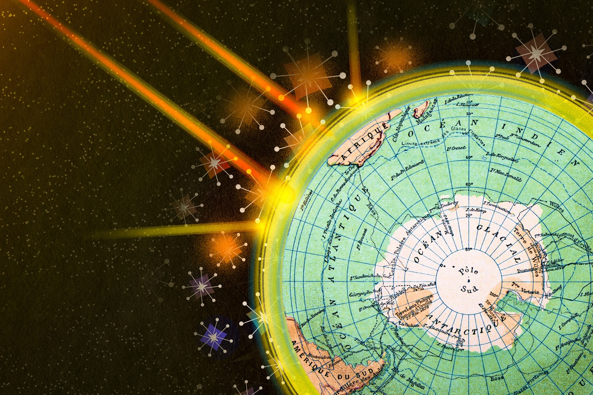

Research
I study the drivers, chemical mechanisms, and climate effects of changes in stratospheric composition. These projects connect the detection of human influence on ozone, observation-constrained stratospheric chemical processes, and the radiative effects of methane-derived water vapor to understand how composition changes affect climate.

Human influence on the ozone layer detectable by the 1960s
I use model ensembles and statistical fingerprinting to identify early human-caused ozone depletion, separating the forced response from natural variability.
Read moreLimited long-term photolysis of stratospheric organic aerosols
I constrain how organic aerosols age and introduce an age-dependent photolysis scheme into CESM, linking observed chemical processes to improved model representations.
Read moreRadiative forcing from methane-derived stratospheric water vapor
I combine satellite methane observations with model ensembles to constrain water vapor produced by methane oxidation, connecting composition changes to radiative forcing.
Read moreCard imagery — ozone: illustration by Jose-Luis Olivares / MIT News; aerosols: NASA / ISS (Earth Observatory); water vapor: AI-generated illustration.
Future interests
I am interested in understanding recent trends in stratospheric water vapor and their effects on climate. I also aim to use ensemble simulations to investigate how wildfire smoke affects climate through interactions between stratospheric chemistry and dynamics, including responses of the polar vortex and the quasi-biennial oscillation (QBO).